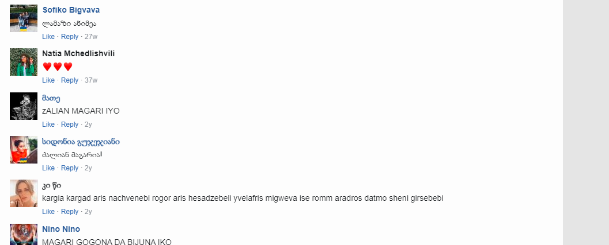

ქვეყანა:იაპონია
რეჟისორი:ჰაიაო მიაძაკი
ახალგაზრდა ალქაჯი კიკი, როდესაც 13 წლის გახდება, ცოტა ხანს ადამიანებთან ერთად უნდა იცხოვროს. კიკი თავის კატასთან ჯიჯისთან ერთად ქალაქში გაემგზავრება, სადაც კეთილ მცხობელს გაიცნობს, რომელიც დაეხმარება მას საკუთარი საქმის წამოწყებაში.სამუშაო კიკის უამრავ ადამიანს შეახვედრებს და ახალ მეგობრებს შეაძენინებს.
